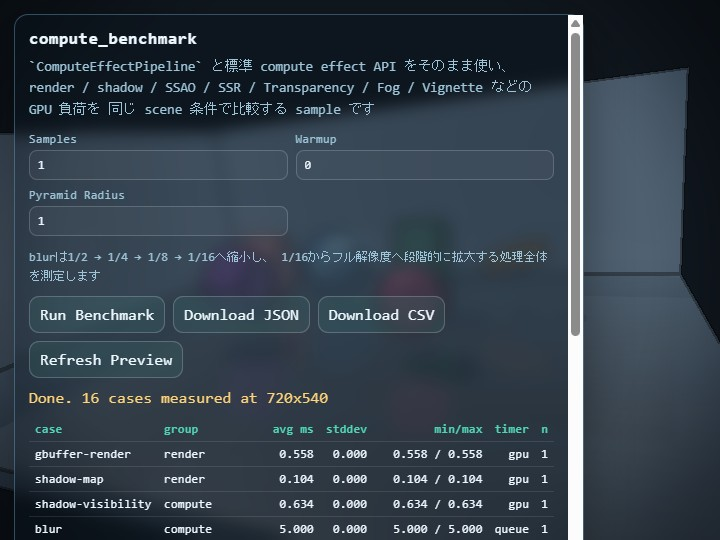

compute_benchmark
English | 日本語

Overview
compute_benchmark is a sample for comparing how much GPU time each standard compute-effect API costs when used from ComputeEffectPipeline. While samples/compute_effect focuses on the look and interaction of a 3D application that combines multiple effects, this sample focuses on measurement: it helps application developers decide which effects are affordable for a target device under one shared scene condition.
This sample measures the standard-resolution behavior of ComputeEffectPipeline, ComputePyramidBlurPass, ComputeBloomPass, ComputeDofPass, SsaoPass, ComputeSsrPass, and related passes directly. The fixed benchmark scene includes a floor, walls, multiple opaque objects, a translucent object, and varied reflectivity so that the G-buffer, shadow map, transparency composition, screen-space reflection, Fog, and post effects all receive meaningful input.
Measured Cases
gbuffer-render measures G-buffer creation, shadow-map measures shadow-map rendering, and shadow-visibility measures the compute stage that derives direct-light visibility from the G-buffer and shadow map. These cases provide the baseline cost that later effects depend on.
blur, toon, dof, bloom, ssao, ssr-ray, ssr-composer, transparency, fog, tone-map, edge, and vignette measure individual stages. transparency includes the two Frost blur levels, roughness mask, and translucent-triangle draw performed by TransparencyPass. fog consumes the transparency-composited HDR scene and opaque G-buffer depth. vignette consumes the display-color result after Tone Map and Edge.
blur measures the complete ComputePyramidBlurPass. It reduces the linear HDR scene continuously to 1/2, 1/4, 1/8, and 1/16 through ComputeImagePyramid, then enlarges the 1/16 image progressively through 1/8, 1/4, 1/2, and full resolution. Each downsample uses a 13-tap low-pass filter, and each upsample uses a 9-tap tent filter. Only the lowest-frequency image is enlarged, so intermediate Levels do not add extra color energy.
The final full-pipeline case enables shadow, SSAO, SSR, automatic transparency composition, Fog, Toon, DoF, Bloom, Tone Map, Edge, and Vignette in the current ComputeEffectPipeline order. The translucent material in the fixed scene ensures that transparency composition actually runs. This lets you compare both individual adoption cost and a representative combined stack inside one tool.
How to Run
- Open ./compute_benchmark.html
- Use a browser and GPU that support WebGPU and
timestamp-query Samplescontrols the number of recorded measurements, whileWarmupcontrols the number of pre-runs excluded from statisticsPyramid Radiuscontrols the sample spacing during downsampling and upsampling; its default is1.0, with a range from0.25through3.0Pyramid Radiusapplies only to the standaloneblurmeasurementdof,bloom, andfull-pipelineuse fixed conditions based on each effect's defaults
Press Run Benchmark to measure each case after its warmup passes, then inspect the average, standard deviation, min, and max in the table. Use Download JSON or Download CSV to save the results. The JSON output also stores raw samples together with canvas size, DPR, browser metadata, pyramidFilterRadius, and pyramidLevels so that later cross-device comparisons remain traceable.
The preview and measured cases that include tone mapping use a fixed Reinhard exposure of 2.0, making the dark regions readable without changing the benchmark lighting inputs. This value is also recorded as toneMapExposure in the JSON metadata.
How to Read the Results
The reported time is meant to compare the GPU cost of each pass itself. The shared input preparation step is rebuilt before every case so the conditions stay consistent, but that preparation time is not folded into the pass result. This makes it easier to compare questions like “how expensive is DoF itself” or “how much extra cost does Bloom add.” When you want a broader frame-level estimate, check full-pipeline together with the Help Panel in samples/compute_effect.
Some cases internally execute multiple passes, and single-pass timestamps can become unstable depending on the browser and GPU driver. For those cases, this sample measures queue completion time instead. The timer column shows only gpu or queue: gpu means a timestamp-query GPU timestamp measurement, and queue means elapsed time from command submit to queue completion.
avg ms is the average of the recorded runs after warmup. This is the first value to compare when you want to judge the relative cost of an effect or compare devices. stddev shows how much the measurement fluctuated across runs. A larger value means the result was less stable. min/max shows the smallest and largest observed times, which helps you see the spread caused by driver state, queue timing, or other runtime variation. n is the number of recorded runs used for the statistics, which matches Samples.
full-pipeline is not a simple sum of the individual cases. It measures the end-to-end cost of running shadow, SSAO, SSR, transparency composition, Fog, Toon, DoF, Bloom, Tone Map, Edge, and Vignette together through ComputeEffectPipeline in one frame. That includes the real handoff between intermediate textures, the actual encode order, and the dependency chain where later stages read the output of earlier stages. Because of that, the sum of separately measured transparency, fog, dof, bloom, edge, and vignette does not necessarily match full-pipeline.
There are two main reasons why separate measurements and simultaneous execution can differ. First, an individual case isolates one pass, while full-pipeline executes the real chained workflow where earlier outputs feed later stages. Second, GPU cache behavior, resource reuse, command grouping, and queue-completion timing can differ between isolated and combined execution. As a result, full-pipeline can be a little smaller than the sum of individual cases in some environments, and a little larger in others.
In this sample, gbuffer-render is often relatively small, so it can look as if the shared baseline is small enough that full-pipeline stays close to the sum of the effect-specific cases. That is one factor, but it does not fully explain the meaning of full-pipeline. A practical way to read the results is to use the individual cases to identify which effects are expensive, then use full-pipeline to estimate how much the whole frame increases when those effects are enabled together.
Checkpoints
main.jsuses the publishedwebg/ComputeEffectPipeline.jsand related passes directly instead of keeping a sample-local duplicate pipeline- The same fixed scene can be used to compare cost differences among
render,shadow,SSAO,SSR, transparency composition,Fog,DoF,Bloom, andVignette foguses the HDR scene after transparency composition, whilevignetteuses display color after Tone Map and Edgeblurmeasures continuous reduction from 1/2 through 1/16 followed by progressive enlargement from 1/16 to full resolution- Changing
Pyramid Radiuschanges only the sample spacing ofblur; the conditions fordof,bloom, andfull-pipelineremain unchanged - The JSON output stores canvas size, DPR, samples, warmup, and browser metadata so the measurement can be reused for device comparisons